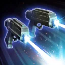
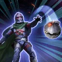
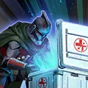

Kix
A conflicted and skilled Healer who does anything it takes to keep his allies alive
A conflicted and skilled Healer who does anything it takes to keep his allies alive

Deal Special damage twice to target enemy and grant all Pirate allies Tenacity Up for 1 turn. For each critical hit scored, dispel all debuffs from a random debuffed Pirate ally. If no Pirate allies were debuffed, a random Pirate ally with less than 100% Health recovers 5% Health and a random Pirate ally with less than 100% Protection recovers 5% Protection.
During Kix's turn, he gains 1 stack of Profit (max 5) for the rest of the battle, and Retribution for 2 turns.

Kix dispels all debuffs on himself. Deal Special damage to all enemies, inflict Healing Immunity for 2 turns, and Steal Critical Hit Immunity, Heal Over Time, Health Up, Health Steal Up, Protection Over Time, and Protection Up. If any buffs were Stolen, grant them to all Pirate allies and reset their duration. For each enemy that didn't have any buffs Stolen, Kix gains 1 stack of Profit (max 5) for the rest of the battle.
If target enemy is Sith, their cooldowns are increased by 1. Otherwise, call target other Pirate ally to assist, dealing 50% more damage.

Revive a random Pirate ally with 50% Health and Protection. If the revived Pirate ally is a Tank, they Taunt for 2 turns, otherwise they Stealth for 2 turns. All Pirate allies recover 10% Health and Protection. If no Pirate ally was revived, reduce the cooldown of this ability by 2.
This ability gains additional effects depending on how many stacks of Profit Kix has. Kix loses 1 stack of Profit for each effect triggered.
- 3+ Stacks of Profit: All Pirate allies recover 30% Health and Protection
- 10+ Stacks of Profit: If there are no allied Galactic Legends, the weakest Pirate ally gains Damage Immunity for 1 turn, which can't be copied, dispelled, or prevented
Kix has +20 Speed for each Pirate ally below 100% Health and Stealths for 1 turn whenever he falls below 100% Health (limit once per encounter). If Maz Kanata is the Leader, all Pirate allies gain 20% bonus Protection and Tenacity Up for 1 turn at the start of the encounter. If Pirate King Hondo Ohnaka or Maz Kanata is the ally in the Leader slot, the cap for Profit is removed for Kix.
Whenever a Pirate ally is inflicted with Healing Immunity or Shock, Kix dispels all debuffs on himself, gains Speed Up for 1 turn and 20% Turn Meter, and he assists himself the next time he uses a Special ability.
At the start of his turn, Pirate allies below 100% Health gain Evasion Up for 1 turn, otherwise they gain 20% Offense for 1 turn. During Kix's turn, his Health and Protection recovery abilities gain an additional 4% healing (once per turn, stacking, max 20%) for each stack of Profit on him.
If there are no allied Galactic Legends and there's an active ally, if Kix has 3+ stacks of Profit, the first time each Pirate ally would be defeated, the defeated ally is revived with 30% Health and Protection, and Kix loses 3 stacks of Profit. If Kix had 5+ stacks of Profit whenever he revives a Pirate ally, the revived ally gains 3 stacks of Endure for 2 turns.
Endure: Can't be instantly defeated; the first time this character would be reduced to 1% Health, dispel 1 stack of Endure, and recover 1% Health which can't be prevented
Omicron Boost : While in Territory Wars: Kix gains 20% Critical Avoidance, Defense, and Tenacity for the rest of the battle whenever a Pirate ally falls below 100% Health (limit once per ally). Whenever Kix revives a Pirate ally, they gain a bonus turn and 100% Offense for 1 turn, their cooldowns are reset, and if they're a Tank, they Taunt for 2 turns, otherwise they Stealth for 2 turns. If a Pirate ally was unable to be revived by Kix, all active Pirate allies gain 20% Defense, Health, and Offense (stacking) for the rest of the encounter, and 20% bonus Protection for 2 turns. Whenever a Pirate ally gains Endure, they gain Damage Immunity until the start of their next turn, which can't be copied, dispelled, or prevented.